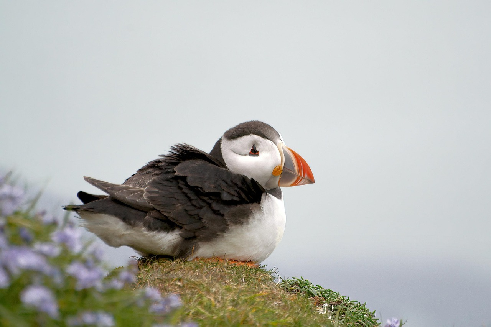

Machine learning is a field of Artifical Intelligence that allows computers to learn from data without being explicitly programmed. By feeding the computer data, the computer learns to identify patterns and make predictions or decision based on that data.
inset project statement here
We decided to create a machine that would be able to identify if an image is either a horse, bird, or fish.
To train the machine, we used 13 different free use images showing a horse, 13 showing a fish, and 22 showing a bird. Here are some examples we used:


We kept our sample of images relatively small in order to use images of horses, birds, and fish that we would be familiar with.
Training the machine was relatviely simple after following the machine learning materials provided in our course. After uploading the images to our machine and cateogrizing them as horses, fish, or birds, we tested our machine. The machine works by utilizing a webcamera, and holding an image infront of it. We used our mobile phones to display an image for the webcamera to capture. Once caputered, the machine categorized the image.
Hold up an image of a horse, bird, or fish to your webcam: